Space Robotics Lab · Tohoku University · Report 06
Moonwalk 2.0Two robots build it
Report 05 proved the plans stand while one robot builds them. This report plans the same structures for crews of two and three Dragons — who places, who hauls, who works where — retires the only imported machine on the site by letting the robots reconfigure for height, and asks the architectural question behind the column: how much power one is worth, as a function of its cells and its light.
▼ SCROLL TO THE SITE
01 · Orientation
Turning to the south pole
The Moon’s axis is tilted only about 1.5°. At the pole the Sun never climbs more than a few degrees: light arrives sideways, high ground can stay lit for most of the year, and low ground can stay dark for ever.
01 · The site
Connecting Ridge
Within 150 km of the pole the crater rims catch the low Sun while their floors never see it. Report 02 scored four NASA candidate regions; the pad and dome in this report are built — in simulation — on Connecting Ridge, between Shackleton and de Gerlache: long sunlit periods, a shadowed floor within reach, and a shoulder flat enough for the pad.
LOLA is the laser altimeter on NASA’s Lunar Reconnaissance Orbiter: it measured the height of the ground, and this layer is that height as colour. Blue is low — the crater floors — and pale is high — the rims. The base site sits on Connecting Ridge, the high crest between Shackleton and de Gerlache, because at the pole height is what buys sunlight. Schematic relief here; the report version uses the LOLA 5 m polar DEM through JSMARS.
lowhigh
01 · Site data · light
Illumination, percent of the year
High ground near the pole stays lit most of the year; the best points on the Shackleton–de Gerlache crest — where the base site sits — exceed 80 %, and the longest nights there last only 3–5 days. Schematic from the basemap here; the report layer is the Mazarico average-illumination map.
0 %> 80 %
01 · Site data · cold
Diviner cold traps
Crater floors that never see the Sun stay below 110 K — cold enough to keep water ice for billions of years. The blue marks these cold traps; Shackleton’s floor, at about 90 K, is the one next door. The base site on Connecting Ridge stays up on the warm, sunlit rim beside it, close enough to haul ice from. Schematic here; the report layer is the Diviner maximum-temperature map.
< 110 Kwarm
02 · Landing zone
ispace Mission 4: the 87° line
The landing latitude given for ispace’s Mission 4 is 87° South or higher: a circle about 91 km in radius around the pole. Connecting Ridge (89.5°S) and de Gerlache Rim 2 (88.7°S) are inside it; Malapert Massif (86.0°S) and Nobile Rim 1 (85.4°S) are outside.
≥ 87°Sinsideoutside
02 · Site selection
The pick: Connecting Ridge
Two candidates survive both filters — NASA’s 2022/24 lists and ispace’s ≥ 87°S band. Report 02’s weighted score put de Gerlache Rim 2 first overall (27) with Connecting Ridge at 23; the build in this series stays on Connecting Ridge for the best light and the closest ice, 16 km from the pole. The method is site-agnostic: the same pad, dome and job list transfer to de Gerlache Rim 2 unchanged.
02 · Site selection
The site, settled in Report 05
Carried over from Report 05, where the full selection lives. Four filters take the whole Moon down to two squares of ground — the south pole for its light and ice, NASA’s Artemis III vetting, the Report 02 scoring, and the ≥ 87°S landing band of ispace’s Mission 4 — and the build stays on Connecting Ridge. Nothing in this report changes the site; what changes is how many robots work on it.
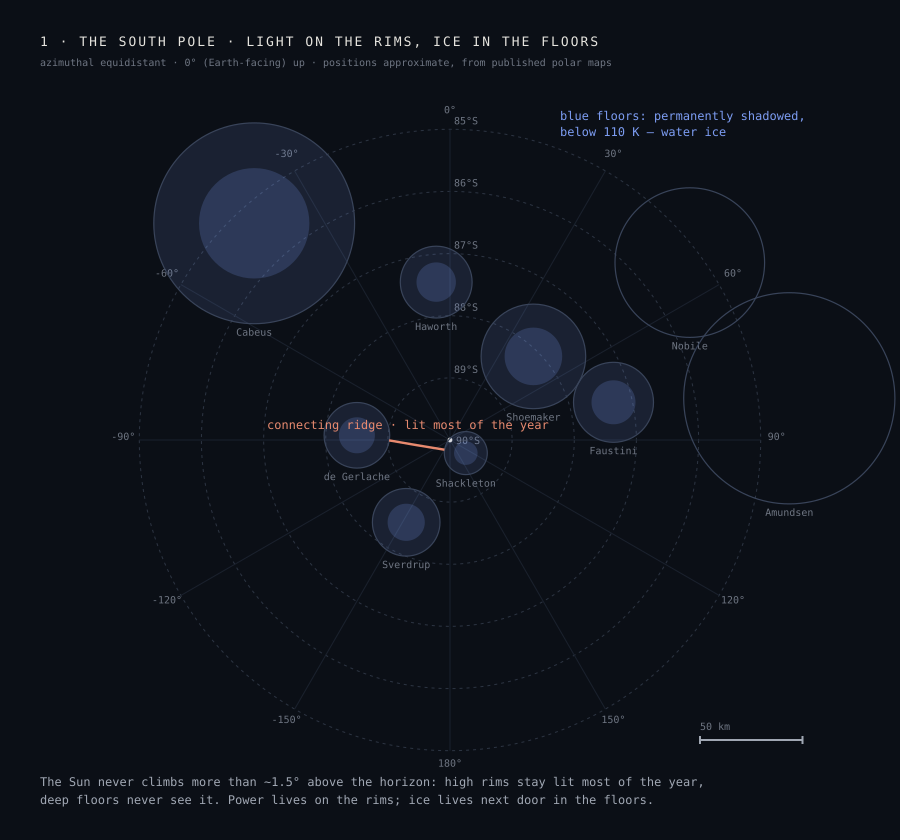
STEP 1 · The pole sets the terms: the Sun stays within ≈ 1.5° of the horizon, so high rims hold near-continuous light while the deep floors below them hold water ice below 110 K. Power and resources sit side by side nowhere else on the Moon.
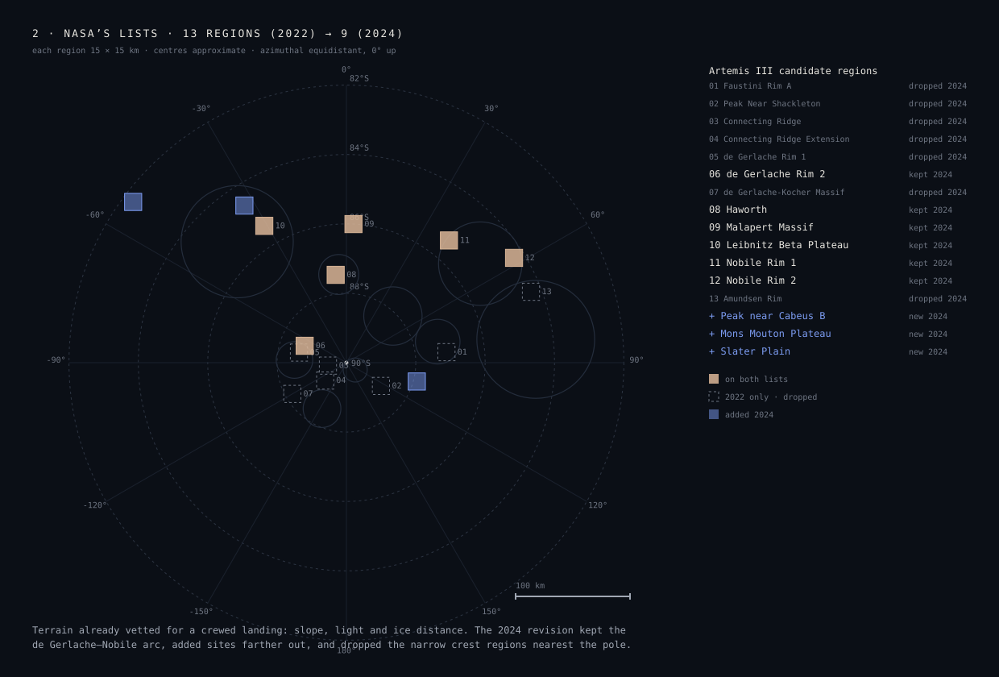
STEP 2 · NASA’s vetting: 13 candidate regions (August 2022) revised to 9 (October 2024), each 15 × 15 km and screened for slope, light and ice distance. The revision dropped the narrow crest regions nearest the pole and added terrain farther out.
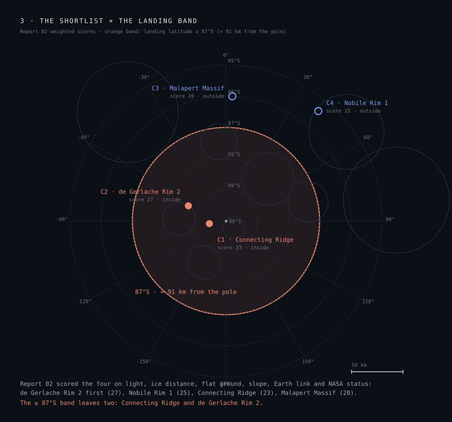
STEP 3–4 · The shortlist against the landing band: Report 02 scored four regions on six weighted criteria; the ≥ 87°S landing band of the expected transport leaves two of them standing.
The fourth filter comes from the transport. ispace’s Mission 4 — planned for 2029 on the ULTRA lander, funded under Japan’s Space Strategy Fund for high-precision polar landing — works to a landing latitude of 87°S or higher, a band of roughly 26,000 km² around the pole. The band says where a lander may go; its 100 m landing accuracy is what lets it arrive next to a prepared pad inside that band. Drawn on the map, the band keeps Connecting Ridge and de Gerlache Rim 2 and excludes Malapert Massif — the shortlist’s best Earth link — and Nobile Rim 1. Two candidates remain, and both stay in play: the assembly method is site-agnostic, so the pad, the dome and the job list transfer between them unchanged.
Candidate
Latitude
From the pole
R02 score
≥ 87°S
C1 · Connecting Ridge base site
89.5°S
16 km
23
inside
C2 · de Gerlache Rim 2
88.7°S
39 km
27
inside
C3 · Malapert Massif
86.0°S
121 km
20
outside
C4 · Nobile Rim 1
85.4°S
139 km
25
outside
Region centres approximate, from published polar maps; Artemis III lists: NASA, Aug 2022 (13 regions) and Oct 2024 (9). Mission 4 parameters from ispace’s public material; the public documents name the south polar region, and the 87°S figure is the programme’s stated working value, drawn here as given. Connecting Ridge remains the working base site of this series; de Gerlache Rim 2 is carried as the scored alternative.
03 · One robot, two, three
Who places, who hauls
Prof. Yoshida set the direction: plan the pad and the dome with crews of robots, and build the tall electric columns with no lifting mechanism — only robots. The planning model gives each Dragon a role per phase — placer (pick a block at its feet, seat it) or hauler (carry a pallet of nine blocks from the yard to a placer’s stockpile) — and schedules the crew over the block sequences the earlier reports established. The pad and dome plans below are now Isaac-playable: planned on the real Report 04 geometry with the Dragon’s own inverse kinematics, every body pose checked against the CAD hulls, both robots drawing from a shared stock yard. The three-robot runs use the same model and are queued.
All plan boards below are zoomable — click to open full screen, scroll or pinch to grow and shrink, drag to pan.
Pad and dome: Isaac-playable kinematic plans on the real geometry — Dragon IK, body against CAD hulls, zero body contacts; arm trajectories not yet collision-checked. Column: kinematic reach-and-sequence study on the lattice; dynamics, torque and stance stability queued.
Why not placer + hauler
The early model showed one hauler keeps exactly one placer busy, no more — so with two robots, two placers win. The Isaac-playable plans sharpen it: one block per trip with the gripper, 0.35 m/s drive, and the hauler role returns only where reach forces it — the dome’s upper rings.
The honest baseline
Report 05’s single-robot times quietly assumed stockpiles standing free beside the build. These plans supply every block from the shared yard, so the one-robot pad is 9.90 h, not the old optimistic figure — and the speed-ups are measured against the honest number.
What the third robot does
On the pad: a third front, or a dedicated hauler that keeps both placers fed. On the dome, the reconfigured pair already owns the reach; a third robot would shorten the Dragon’s supply trips. On the column: the Tripod Multicycle reconfiguration. All three runs queued on the same model.
INTERACTIVE · PLAY THE PLAN
Drag the slider or press play · warm = Dragon (A on the pad), blue = second Dragon on the pad / tricycle in the dome, dark → pale = build order · SCHEMATIC block layout; the true order, trips and poses are in the planner boards above and below
04 · Two robots · pad
Two placers, half a pad each
The pad is embarrassingly parallel: every paver lies flat, and the centre-out sequence splits into two fronts that never share a seat. In the Isaac-playable plan each Dragon lays its own half of the 283 pavers, centre out, supplied from the shared yard; the robots keep a 0.24 m clearance and the whole plan runs with zero body contacts. One Dragon: 9.90 h. Two: 3.89 h — 2.5 times faster, better than halving, because the second robot also halves every supply run.
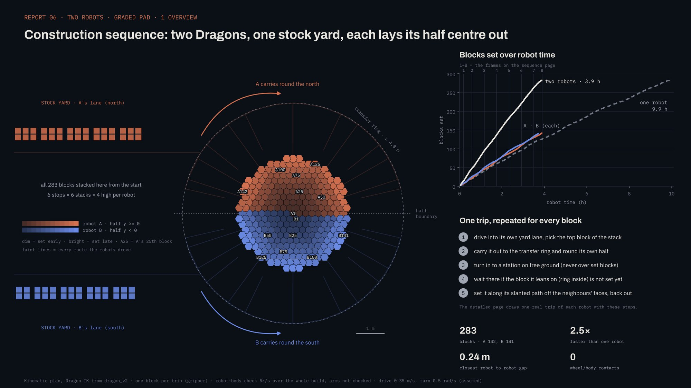
1 · Overview · two Dragons, one stock yard · each carries round its own half of the transfer ring and lays its half centre out · 283 blocks, A 142 / B 141 · closest gap 0.24 m, zero contacts
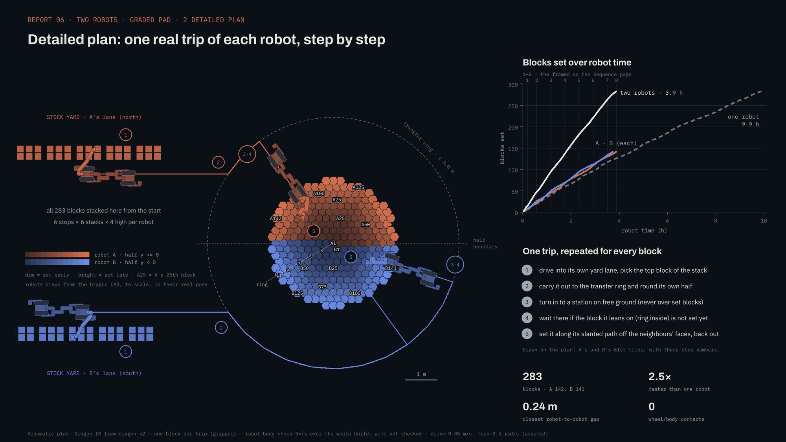
2 · Detailed plan · one real trip of each robot, step by step: yard lane → transfer ring → station on free ground → set along the slanted path · one block per trip with the gripper · two robots 3.9 h against one at 9.9 h
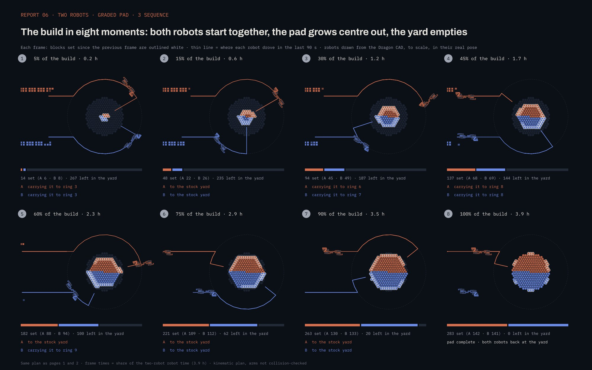
3 · The build in eight moments · both robots start together, the pad grows centre out, the yard empties · robots drawn from the Dragon CAD, to scale, in their real pose
What carries over
Sequence, interlock and the Report 05 stage-stability verdict are untouched: pavers do not care which robot seats them, only in what order.
What the plan already checks
Body-against-body and body-against-structure clearance at every pose (CAD hulls, minimum gap 0.24 m). Still open: arm-trajectory collision checks, and the physics replay of the two-front build.
Three robots
Thirds of the pad, or two placers and a hauler. The planner run is queued; the model says a dedicated hauler is worth most exactly here, where supply runs dominate.
Wide camera · two Dragons, one stock yard · each lays its half centre out, the yard empties · 180 s story cut of the 3.9 h plan
Follow-camera cut · slot open — drops in when exported.
05 · Two robots · dome
The Dragon outside, the tricycle inside
Reach decides who works where — and the best answer turned out to be the reconfigured pair, not two identical Dragons. The Dragon works outside, setting the 81 blocks of rings 0–6 it can reach from the ground; the tricycle (the taller rebuild of the same modules — chapter 06) crouches inside the dome the whole build and sets the remaining 113 blocks, rings 7–15, all the way to the crown at 1.65 m. Every one of the tricycle’s blocks is handed in through the door by the Dragon — held in at 0.72 m, outer face to inner face. One Dragon alone: 5.07 h. Two identical Dragons: 2.71 h. The Dragon–tricycle pair: 1.52 h — 3.3 times faster than one robot, because the inside robot that can reach the crown never has to leave, and the outside robot that can drive never stops feeding it.
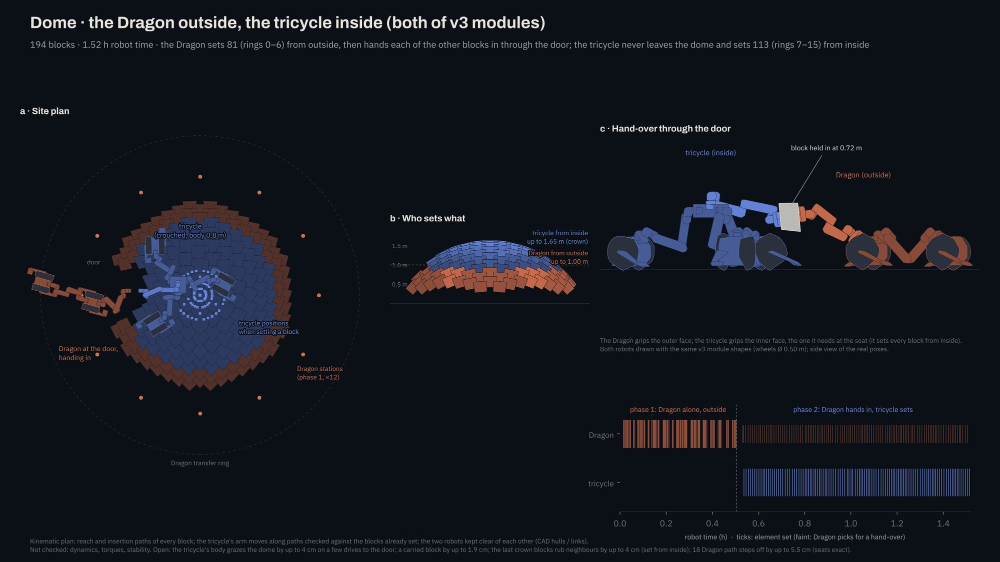
The plan · site plan with the Dragon transfer ring and the crouched tricycle (body 0.8 m) · who sets what: Dragon from outside to 1.00 m, tricycle from inside to the 1.65 m crown · the hand-over through the door at 0.72 m · phase timeline to 1.52 h
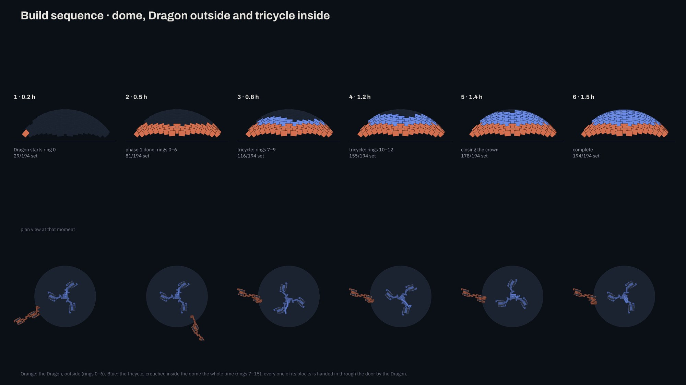
The build in six moments · phase 1: the Dragon’s rings 0–6 from outside (done at 0.5 h) · phase 2: the tricycle closes rings 7–15 from inside, fed through the door · complete at 1.5 h
Why this split wins
From the ground outside, a Dragon reaches only the lower courses; from inside, the crouched tricycle reaches every ring including the crown. Giving each robot the courses its geometry owns removes the mid-build role switch that limited the two-Dragon plan — and with it, most of the waiting.
The honest opens
Kinematic plan, and it says so: the tricycle’s body grazes the dome by up to 4 cm on a few drives to the door, a carried block by up to 1.9 cm, the last crown blocks rub their neighbours by up to 4 cm as they go in from inside, and 18 Dragon path steps are off by up to 5.5 cm (the seats themselves are exact). Dynamics, torques and stability queued.
The earlier iteration
Two identical Dragons — A inside through the door, B outside on the lower far rings, then hauling — finished in 2.71 h and is documented in the films below. The reconfigured pair halves it again. Staples as in Report 05 throughout.
The earlier iteration: two identical Dragons
Documented before the reconfiguration study re-ranked the options: A inside through the west door, B outside on the lower far rings and then hauling to the doorway pallet — 2.71 h, 1.9× one robot. Kept in full because it is the honest comparison the tricycle plan is measured against.
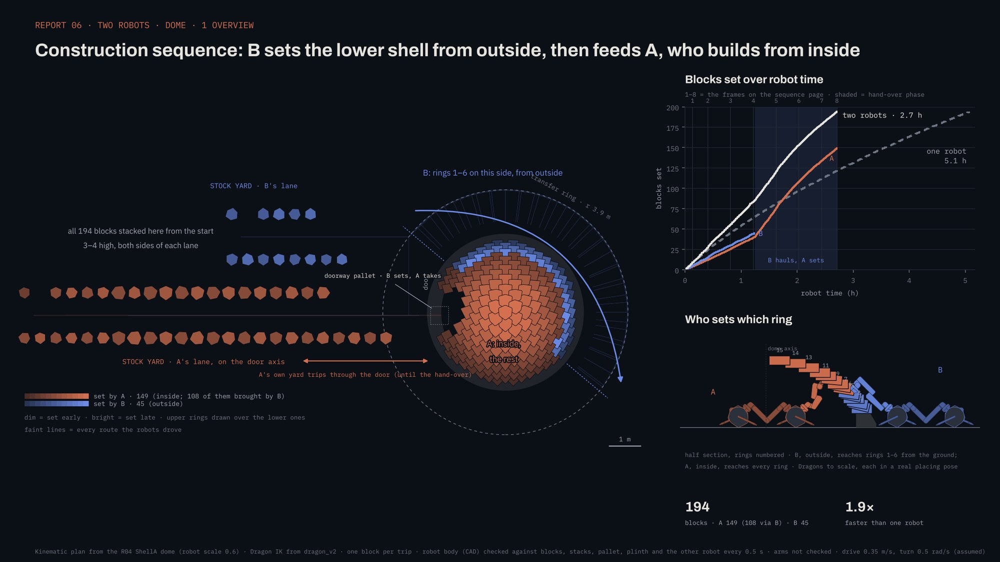
1 · Overview · B sets rings 1–6 on the far side from outside (45 blocks), A builds the rest from inside · A 149 blocks, 108 of them brought by B
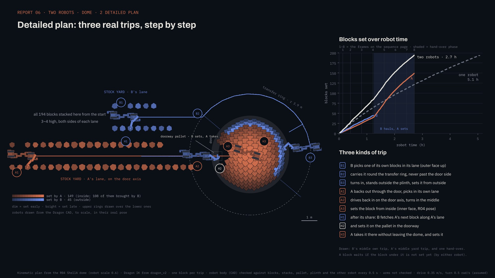
2 · Detailed plan · three kinds of trip: B’s own block, A’s yard trip through the door, and the hand-over at the doorway pallet
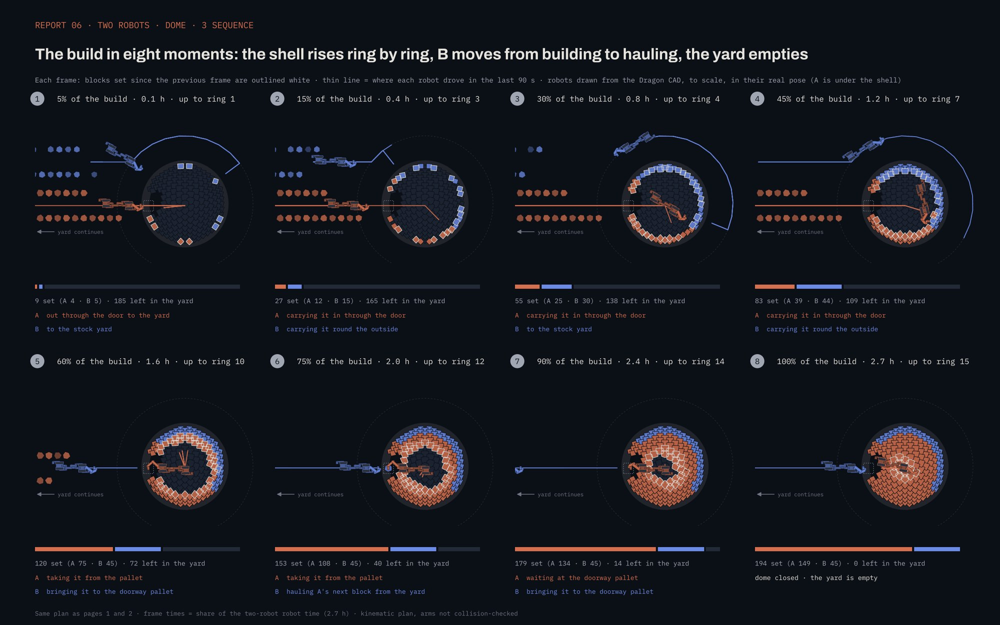
3 · The build in eight moments · B moves from building to hauling at 1.25 h, the yard empties · dome closed at 2.7 h
Wide camera · the plan above, filmed: the Dragon’s rings from outside, then the crouched tricycle closing the crown from inside, fed through the door · 180 s story cut of the 1.52 h planFollow camera · the hand-over through the door at 0.72 m, outer face to inner face, block after blockArm camera · the tricycle seating rings 7–15 from inside, staples in, up to the crownWide camera · the earlier two-identical-Dragon iteration (2.71 h plan): B setting the lower rings from outside while A builds through the west doorFollow camera · over the Dragons’ shoulders — B’s outside trips, the hand-over at the doorway palletArm camera · blocks seated against their neighbours, staples in · the view the planner’s insertion paths are made of
06 · Two robots · column
The robots are the lift
Report 05 built the power column from a scissor-lift deck and flagged the lift as an open assumption. It is retired — and the answer is not a new machine but a reconfiguration of the same modules. The Dragon works the foot of the lattice from the ground: frames to 0.97 m, panels to 1.15 m. For everything above, the second robot is rebuilt as a tricycle — the same v3 limb modules (0.41 m links) and the same v3 wheels (Ø 0.50 m), with the body raised to 1.3 m — whose reach covers the full top of the column, no platform, no lift. In the plan the Dragon sets 186 elements from the ground, up to 1.16 m; then every one of the next 262 passes hand to hand — the Dragon holds it out at 1.07 m, inner face, and the tricycle takes it by the outer face and seats it; the Dragon adds the last 2 low panels itself. The lattice column — 2.21 m, 450 elements, 230 frames and 220 panels — is complete in 2.7 h of robot time.
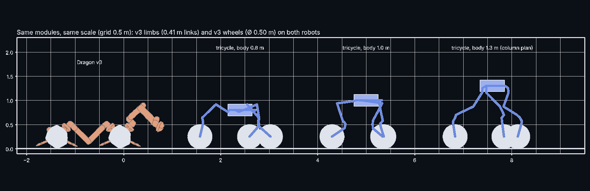
One kit, two robots · Dragon v3 and the tricycle built from the same v3 limbs and wheels, body at 0.8 / 1.0 / 1.3 m · the 1.3 m stance is the column plan
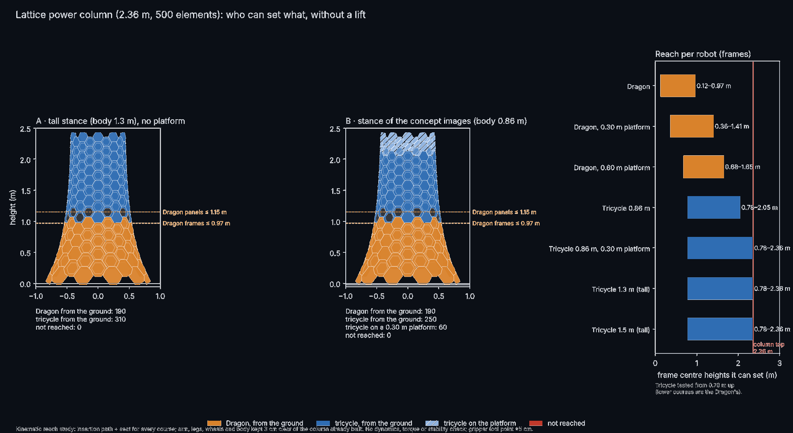
The stance study that chose the tall tricycle (run on an earlier 2.36 m lattice) · the 0.86 m concept stance would need a 0.30 m platform for the top courses — the tall stance needs nothing · kinematic: insertion path and seat for every course, 3 cm clearance
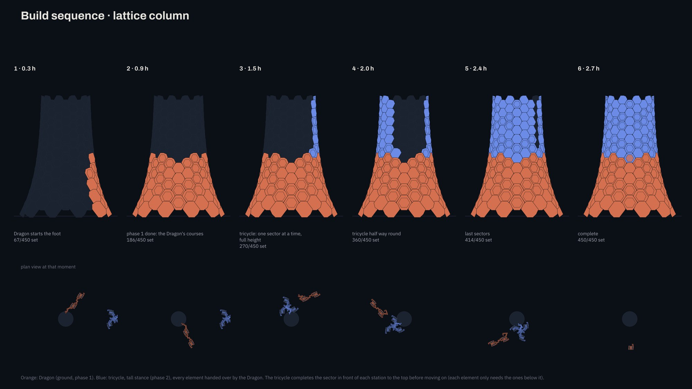
Build sequence · phase 1: the Dragon’s courses · phase 2: the tricycle, sector by sector to the top, every element handed over by the Dragon · complete at 2.7 h
Reconfiguration, not new hardware
The tricycle is the lab’s own kit rearranged: three wheels, the limbs as legs, the body raised. Nothing lands on the Moon that was not already in the Dragon’s parts list — which is the whole argument of the modular robot.
What is checked, what is not
The plan is kinematic: an insertion path and a seat for every one of the 450 elements, arm, legs, wheels and body kept 3 cm clear of the column and of the other robot (CAD hulls). The plan’s honest flaws: 2 of 132 carried frames graze a neighbour by up to 1.8 cm on the last centimetres in, and 6 placements fall back to a default approach path. Not yet checked: joint torque at reach, stance stability, and the dynamics of the hand-over — the Isaac and lab runs this chapter waits on.
Alternatives studied
The tandem ladder (A standing on B, ≈ 2.65 m with a donated limb) and the climber-and-feeder (no height limit, needs grip features) remain on file; the Tripod Multicycle is the queued three-robot study. The tricycle won on reach without docking.
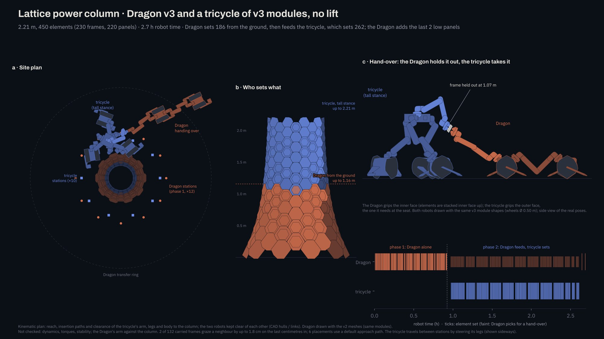
The construction plan · site plan (12 Dragon stations in phase 1, 10 tricycle stations, Dragon transfer ring) · who sets what · the hand-over: the Dragon holds the element out at 1.07 m, inner face; the tricycle takes it by the outer face · phase timeline to 2.7 h
Arm camera · the no-lift column build: the Dragon’s courses, then the hand-overs — held out, taken, seated by the tricycle · 180 s story cut of the 2.7 h plan
Wide and follow cuts · slots open — drop in when exported.
07 · The power study
What a column is worth
The column exists to carry photovoltaic cells, so the architectural question is what one column earns — and the site makes the geometry unusual. At the pole the Sun never climbs more than a few degrees: light arrives horizontally and walks 360° around the horizon each lunar month. A vertical column clad in cells all round is therefore the natural collector — the panels stand near-normal to the light, no tracking, no mast to turn — and its yield follows one line of arithmetic: average power = solar constant × cell efficiency × panel fill × sunlit fraction of the year × the column’s panel area averaged around the ring (total area / π). Two levers belong to the design: the cell size, which sets panel area block by block, and the exposure, which the site and the column’s height buy.
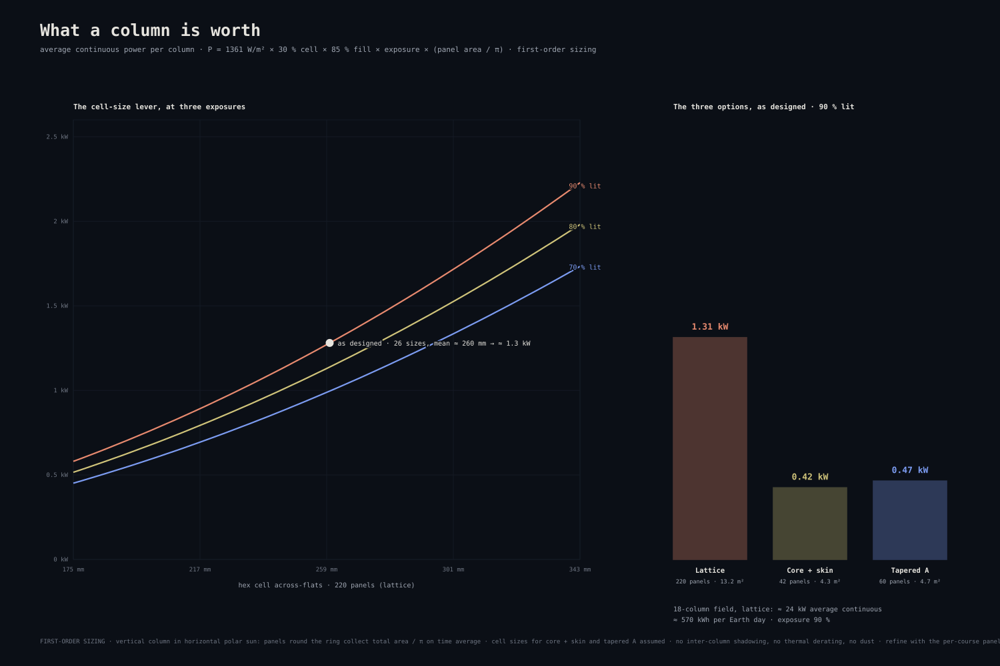
Average continuous power per column · left: the cell-size lever at three exposures, lattice option, 240 panels · right: the three options as designed · first-order sizing, assumptions in the table
INTERACTIVE · SIZE YOUR COLUMN
—kW per column, average continuous
—kW per 18-column field
—kWh per Earth day, one column
P = 1361 W/m² × 30 % cell × 85 % fill × exposure × (panel area / π) · same first-order model as the chart · as designed: 220 panels, mean 260 mm, 90 % → ≈ 1.3 kW
Option
Panels
Cell across-flats
PV area
Average power · 90 % lit
Per 18-column field
1 · Lattice
220
175 → 343 mm (26 sizes)
≈ 13.2 m²
≈ 1.3 kW
≈ 24 kW
2 · Core + skin
42
343 mm (assumed)
≈ 4.3 m²
≈ 0.43 kW
≈ 7.7 kW
3 · Tapered A
60
300 mm (assumed)
≈ 4.7 m²
≈ 0.47 kW
≈ 8.4 kW
Assumptions, stated: solar constant 1361 W/m² · cell efficiency 30 % (multi-junction) · cell fill of the hex aperture 85 % · panels distributed round the column, so time-averaged collecting area = total PV area / π · exposure 90 % from the Report 02 site data (best crest points 80–92 %) · no inter-column shadowing, no temperature derating, no dust. First-order sizing — the levers matter more than the third digit.
The lattice earns its slow build
Chapter 06 ranked the lattice slowest to build; here it repays the time: a panel in every frame gives it roughly three times the collecting area of either block option — about 1.3 kW continuous against 0.4–0.5 kW. The construction-time ranking and the power ranking point in opposite directions, and that trade is the design decision.
The cell-size lever is quadratic
Power follows the square of the cell across-flats: at 240 panels, 175 mm cells earn about 0.6 kW where 343 mm cells earn about 2.4 kW. Every millimetre of cell the frames can carry is worth buying — which is a block-design question, not a power question.
The exposure lever is the site
The same column earns 1.0 kW at 70 % exposure and 1.3 kW at 90 % — the span between an ordinary polar site and the best crest points of Connecting Ridge. Height helps too: the illumination maps give 92 % at 2 m and 96 % at 10 m, so taller columns — the climber-and-feeder growth path — buy exposure as well as area.
To refine next: the real panel layout per option from the Grasshopper definition (exact per-course sizes in place of the mean), self-shadowing between the 18 towers at low sun, and cell temperature on the sunlit face.
08 · The planning side
Grasshopper plans, Motion Stack moves, Isaac Sim checks
The pipeline behind every number in this report — and, per Prof. Yoshida, the spine of a paper. The idea is one sentence: Grasshopper exports operations, not trajectories. One definition holds the design model, the planner and the Dragon’s own kinematics; it writes a plan file of named operations with dependencies; an executor per robot runs that same file either in Isaac Sim, as the physics check, or on the real Dragon through the Motion Stack — and the measured timing, poses and failures flow back into the definition, which re-plans from the as-built state. Design file and as-built record are the same file.
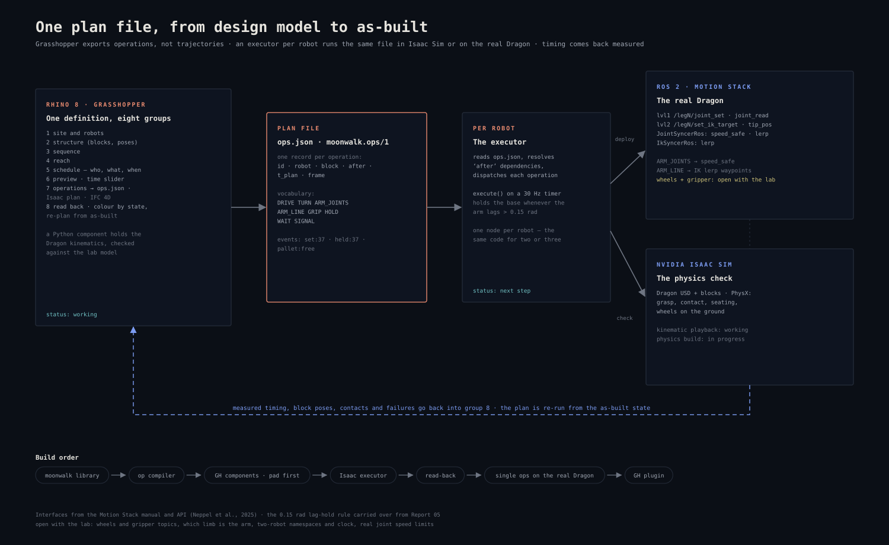
The interface · one plan file from design to as-built · ops.json (schema moonwalk.ops/1) between Grasshopper and the executors; Motion Stack topics and syncers on the robot side; PhysX on the check side · statuses as of this report
The canvas
Eight groups, left to right: site and robots, structure, sequence, reach, schedule, preview, operations, read-back. Sliders set block count, yard side and playback speed; the time slider shows both robots at any moment; one button bakes the job list, the Isaac plan and the 4D IFC.
The operation
Eight verbs — DRIVE, TURN, ARM_JOINTS, ARM_LINE, GRIP, HOLD, WAIT, SIGNAL — each with id, robot, block, dependencies (after), planned time and frame. Events like set:37 or pallet:free let one robot’s plan wait on the other’s progress without a shared clock.
The two executors
The same ops file runs in two worlds: Isaac Sim with PhysX for the check, and the real Dragon through the Motion Stack’s joint and IK syncers. Nothing is re-planned between them — which is what makes a measured Isaac time a prediction of a real build time.
Read-back
Group 8 colours every block by its measured state and re-plans from the as-built model. The 4D BIM stops being a drawing of intent and becomes a record of fact while the robots work — the as-built loop Report 05 promised.
Open with the lab
The Motion Stack docs cover limbs, not wheels or grippers; which limb number is the Dragon’s arm, the two-robot namespaces and clock, and the real joint speed limits are the four questions that gate the first hardware run.
Towards the paper
Already in hand: the Isaac-playable two-robot plans, the measured 17 s/block, the boards above. Still needed for the paper’s claim: the physics loop closed on one build, and at least one operation executed on the real Dragon through this exact file.
09 · What the lab must show
Four demonstrations this plan stands on
Report 05 owed its numbers to Isaac Sim; this report also owes some to hardware. The planning model is deliberately ahead of the lab — that is its job — but each assumption below is named, and the plan is only as real as these demonstrations.
1 · Docking for height
Limb-to-limb and body-top docking under lunar-relevant load — tandem first, the three-robot Tripod Multicycle after. Dragon ×4 exists horizontally; the vertical case is new.
2 · Torque at reach
Joint torque with a block at full tandem extension (~2.65 m, block mass at the top courses ~1–2 kg equivalent). Sets how heavy the top-band blocks may be.
3 · The real dimensions
Limb length and body height as built, which set every rung of the reach ladder; the 1.2 / 1.65 / 2.65 m figures are estimates until measured.
4 · Two-robot Motion Stack
Namespaced control of two Dragons from one ROS 2 graph — the software twin of everything in chapters 04–06.
10 · Simulation methodology
How the environment and the replay are built
The environment is Report 05’s, unchanged: a real LOLA digital elevation model of the site as the ground — a 5 m/pixel patch of about 16 × 16 km — far terrain to 8 km, and the Sun held at 9° above the horizon, azimuth 215°. What changes is the planner on top of it: a two-robot scheduler assigns every block to a robot and a phase, with one measured number (17 s per block placed, from the Report 05 Isaac runs) and stated assumptions for hauling, docking and reconfiguration. Its exports drive the same pipeline as before — Isaac playback with the real Dragon kinematics, then the block-by-block stage-stability check. The pad and dome plans are now Isaac-playable — exported as operations with the Dragon’s inverse kinematics, every body pose checked against the CAD hulls — and the physics replay of those plans is the next run. Until it lands, the times here are kinematic planning results, not physics results.
11 · Next steps
From kinematic plan to physics, from two robots to three
The discipline is Report 05’s: replay it, measure it, and say which numbers are measured. The pad and dome plans are Isaac-playable today; what follows is the physics verdict and the third robot.
Physics replay
The two-Dragon pad and dome plans through PhysX with the stage-stability check — does the Report 05 verdict hold with two build fronts — plus the dedicated keystone move for the dome crown, and arm-trajectory collision checks.
Three robots
The queued planner runs: pad with a third front or a dedicated hauler, dome with a full-time hauler, and the Tripod Multicycle reconfiguration for the column, with tandem stability at 2.5 m as the gate.
Films
The Movie Capture exports of the two-robot builds — the set made for Prof. Yoshida — into the three slots above, pad, dome and column.
Power, refined
The real per-course panel sizes from the Grasshopper definition in place of the mean cell, self-shadowing across the 18-tower field at low sun, and the exposure gain of taller columns.
Lab numbers
Limb length and body height as built; limb-to-limb and body-top docking; joint torque at full extension; Motion Stack namespaces, wheels and gripper for the executor.
Operations pipeline
The Grasshopper definition exports operations, not trajectories: one executor per robot runs them in Isaac Sim or on the real Dragon through the Motion Stack, and measured timing flows back into the plan — the same file from design to as-built.
scroll / pinch to zoom · drag to pan · double-click to reset · Esc to close